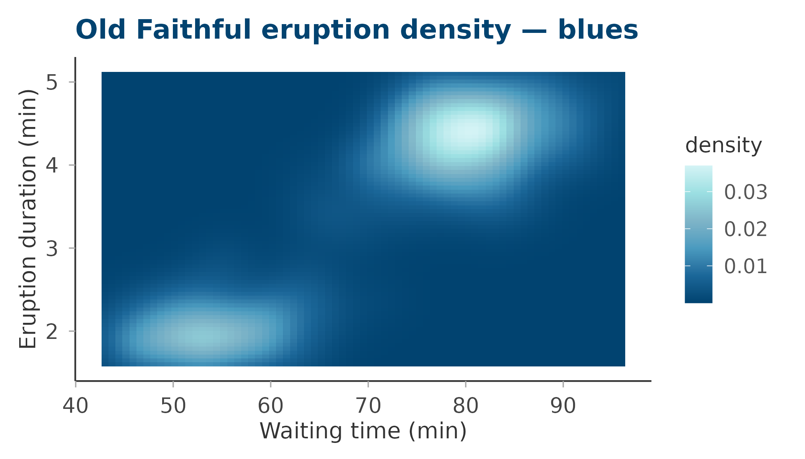
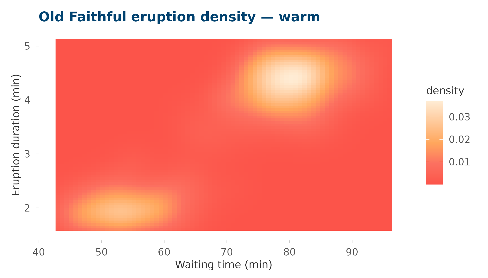
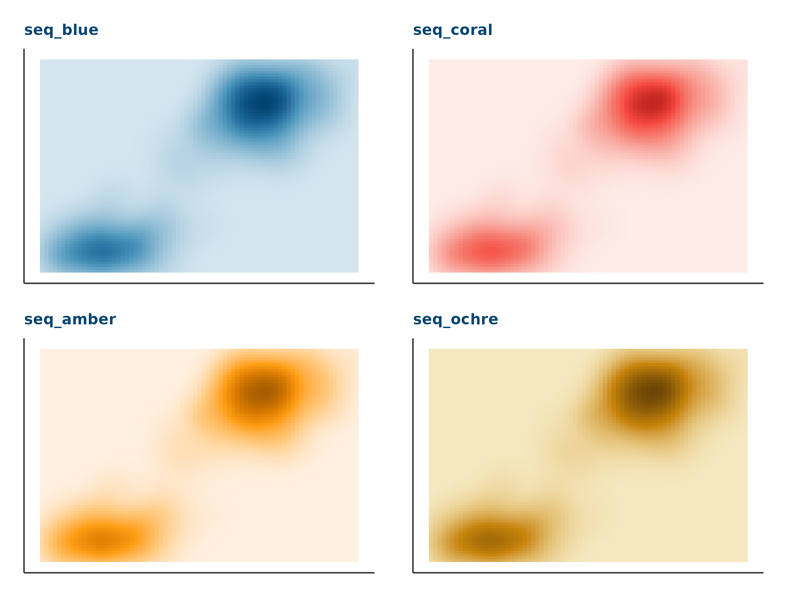
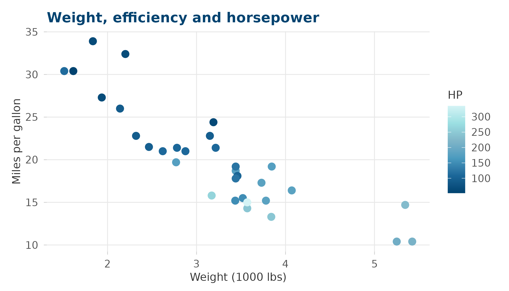
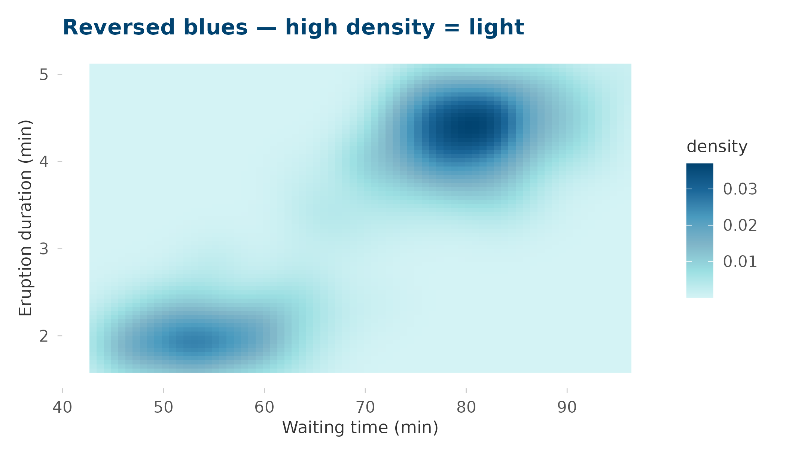

Sequential palettes map a continuous range from low (light) to high (saturated). circadia provides two families:
| Family | Palettes | Hue strategy |
|---|---|---|
| Complex |
blues, warm
|
Multi-hue — higher perceptual contrast |
| Simple |
seq_blue, seq_coral,
seq_amber, seq_ochre
|
Monochromatic shades — consistent hue identity |
Use complex palettes when maximum contrast across the range matters. Use simple palettes when you want the colour to stay clearly associated with a particular brand colour throughout its range.
Complex sequential
blues
Six stops from deep blue to pale teal — suited to density, intensity, or frequency data.
ggplot(faithfuld, aes(waiting, eruptions, fill = density)) +
geom_tile() +
scale_fill_circadia_c("blues") +
labs(title = "Old Faithful eruption density — blues",
x = "Waiting time (min)", y = "Eruption duration (min)") +
theme_circadia(grid = "none")
warm
Five stops from coral to antique white — suited to warm-toned data such as body temperature, light exposure, or alertness ratings.
ggplot(faithfuld, aes(waiting, eruptions, fill = density)) +
geom_tile() +
scale_fill_circadia_c("warm") +
labs(title = "Old Faithful eruption density — warm",
x = "Waiting time (min)", y = "Eruption duration (min)") +
theme_circadia(grid = "none")
Simple sequential
Each simple palette is a monochromatic ramp of one brand colour,
running from a pale tint to the full saturated value. Use these when the
hue itself carries meaning — e.g. seq_blue for sleep depth,
seq_ochre for light exposure intensity.
seq_blue
seq_coral
seq_amber
seq_ochre
make_tile <- function(pal) {
ggplot(faithfuld, aes(waiting, eruptions, fill = density)) +
geom_tile() +
scale_fill_circadia_c(pal) +
labs(title = pal, x = NULL, y = NULL) +
theme_circadia(grid = "none") +
theme(
plot.title = element_text(size = 11),
axis.text = element_blank(),
axis.ticks = element_blank(),
legend.position = "none"
)
}
(make_tile("seq_blue") + make_tile("seq_coral")) /
(make_tile("seq_amber") + make_tile("seq_ochre"))
Combining with theme_circadia()
All continuous scales compose naturally with
theme_circadia():
ggplot(mtcars, aes(wt, mpg, colour = hp)) +
geom_point(size = 3) +
scale_colour_circadia_c("blues") +
labs(
title = "Weight, efficiency and horsepower",
colour = "HP",
x = "Weight (1000 lbs)", y = "Miles per gallon"
) +
theme_circadia()
Reversing
Pass reverse = TRUE to any continuous scale to flip the
direction — useful when lower values should map to the saturated
end:
ggplot(faithfuld, aes(waiting, eruptions, fill = density)) +
geom_tile() +
scale_fill_circadia_c("blues", reverse = TRUE) +
labs(title = "Reversed blues — high density = light",
x = "Waiting time (min)", y = "Eruption duration (min)") +
theme_circadia(grid = "none")